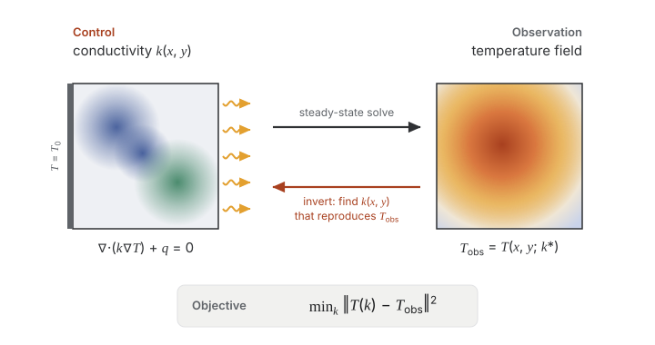
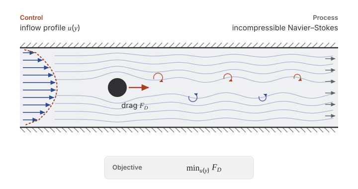

What we found
The solvers that manage to return finite gradients agree with finite differences and reach comparable optima. Here's where they actually differ:
-
Integration effort varies widely
The code needed to wrap a solver ranges from under 200 lines to more than 2,000. Beyond the paper, the solver reference records each departure from a solver's default usage and why it was needed.
-
On benign problems, choose the fastest (or friendliest) solver
Where all solvers reach equivalent results, as on Mosaic's conductivity inversion and compliance minimization tasks, the choice comes down to speed and integration effort.
-
Solvers fail because of missing features, instability, and memory constraints
Some solvers lack features a task needs, such as non-periodic boundary conditions. On long rollouts, solvers run out of GPU memory at very different problem scales, and some return non-finite gradients well before that.
-
Many differences only show up in a benchmark
Solvers using the same framework, discretization, or time stepper can still differ wildly in their properties, and it is hard to predict how they will fail. Testing candidates on the task at hand is what Mosaic is built for.

Tasks and solvers
Mosaic covers four physical domains, each with one optimization task. Forward-only solvers serve as references.

Conductivity inversion Heat transfer
Recover the conductivity of a slab from its steady-state temperatures.
FEniCS, Firedrake, JAX-FEM, torch-fem, and deal.II (forward only)

Compliance minimization Structural mechanics
Make a cantilever as stiff as possible with a fixed amount of material.
FEniCS, Firedrake, JAX-FEM, TopOpt.jl, torch-fem, and deal.II (forward only)

Inflow optimization Incompressible fluids
Shape the inflow to lower the drag on a cylinder in a 2D channel, and check gradients on periodic flows.
Exponax, INS.jl, JAX-CFD, PhiFlow, PICT, Warp-NS, XLB, and OpenFOAM (forward only)

How Mosaic works
Mosaic treats every solver as a black box with a forward and a gradient call, so the same checks apply to all of them.
Forward accuracy
Reference agreement. Error against analytic solutions, literature values or converged high-resolution runs, within a tolerance.
Convergence. How the error shrinks as the resolution increases.
Gradient quality
Gradient accuracy. Agreement with finite differences over a range of step sizes, with exact gradients where they exist, and through chains of calls.
Optimization. Convergence with the same optimizer and budget for every solver on a task.
Compute cost
Scaling. Wall time and peak memory of the forward and gradient calls across problem sizes.
Rollout length. The longest rollout a solver can differentiate through in one call before it runs out of memory or its gradient turns non-finite.
Development cost
Setup compatibility. Whether the solver can express the task, and why not if it can't.
Integration effort. Every departure from a solver's default usage, with its reason and evidence, rated from L0 (a documented option) to L3 (a change to the solver itself). These records are not part of the paper, which counts lines of wrapper code instead.
Use a solver in your own code
Every solver in Mosaic is packaged as a Tesseract, a container that exposes a forward pass and a vector–Jacobian product, whatever the solver's language or way of computing gradients. The benchmark calls solvers through this interface, and your own code can too.
This code calls a solver from JAX, without the benchmark around it. The standalone guide covers the installation, PyTorch, the mesh solvers, GPUs, and loading a solver without Docker.
import jax from tesseract_core import Tesseract from tesseract_jax import apply_tesseract from mosaic_shared.problems.navier_stokes_grid import make_vortex_ic v0 = make_vortex_ic(N=64, seed=42) image = "exponax_navier_stokes_grid" # JAX, reverse-mode AD with Tesseract.from_image(image) as solver: def loss(v0): out = apply_tesseract(solver, {"v0": v0, "steps": 50}) return jax.numpy.mean(out["result"] ** 2) grad_v0 = jax.grad(loss)(v0)
Dive in
- Run the benchmark
- Install Mosaic, run the benchmark on your own hardware, and read its output.
- Current results
- Every result and plot per task, for the latest version of the benchmark.
- Solver reference
- Each solver's checks, usage, and departure from its default usage.
- Reproduce the paper
- Regenerate the paper's figures and tables from the published results at the
v0.3+paper-reprotag, or re-run the experiments. - Contribute
- Mosaic thrives on community contributions, for example ones that add a solver, add a task or improve how a solver is set up.
This page describes the benchmark as pinned for the paper, at the tag v0.3+paper-repro. The Mosaic documentation tracks the latest benchmark problems, solver versions, and numerical results.
Cite Mosaic
@inproceedings{rehmann2026mosaic,
title = {Mosaic: A Benchmark Suite for Differentiable Physics Solvers},
author = {Rehmann, Andrin and Zimmermann, Heiko and H{\"a}fner, Dion},
booktitle = {Advances in Neural Information Processing Systems},
note = {Evaluations and Datasets Track},
year = {2026},
eprint = {2606.27895},
archivePrefix = {arXiv}
}